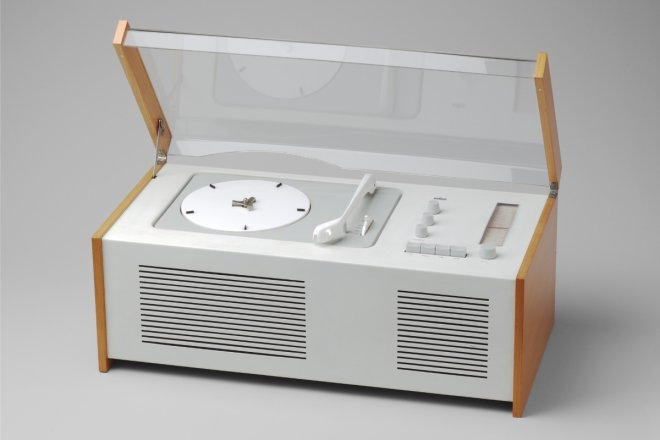
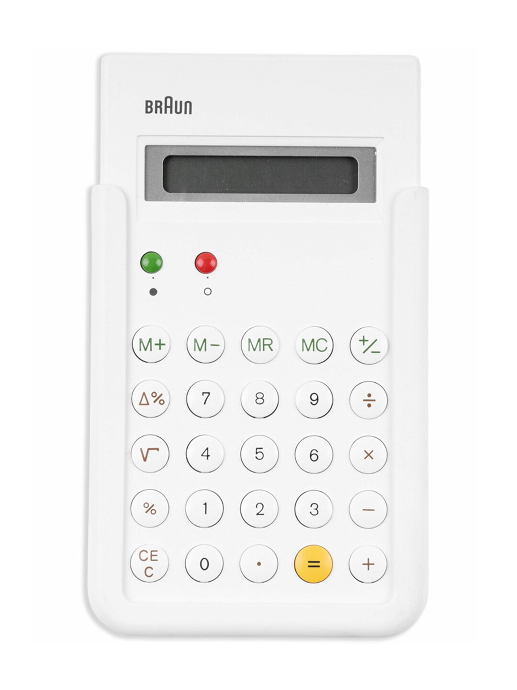
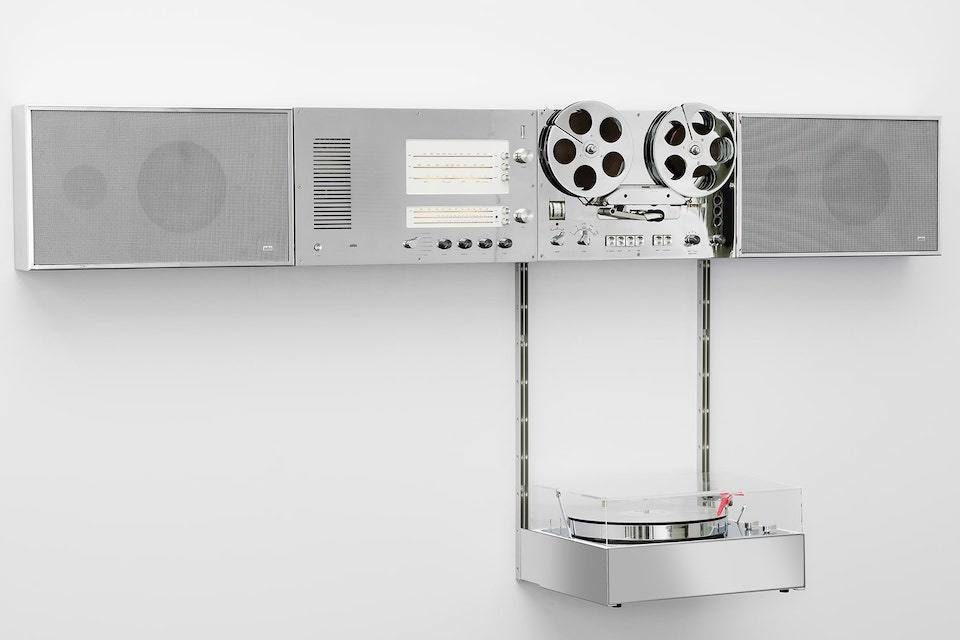
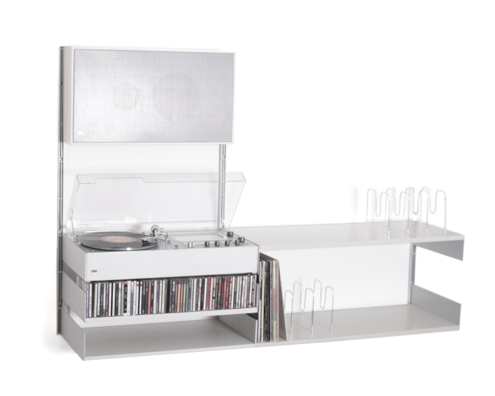
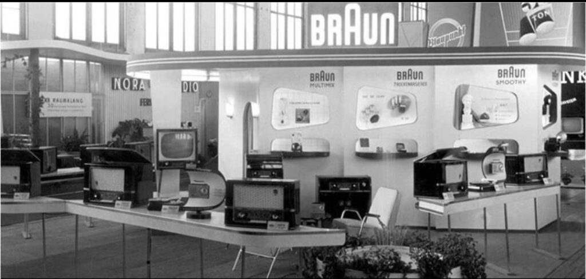
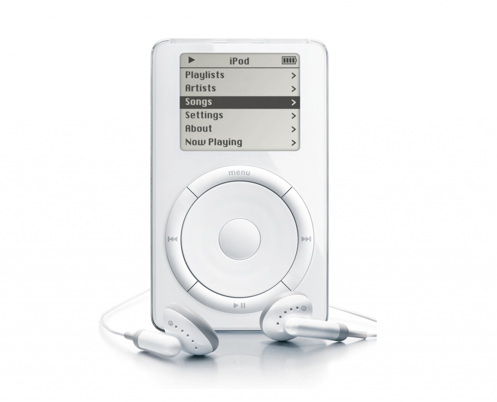
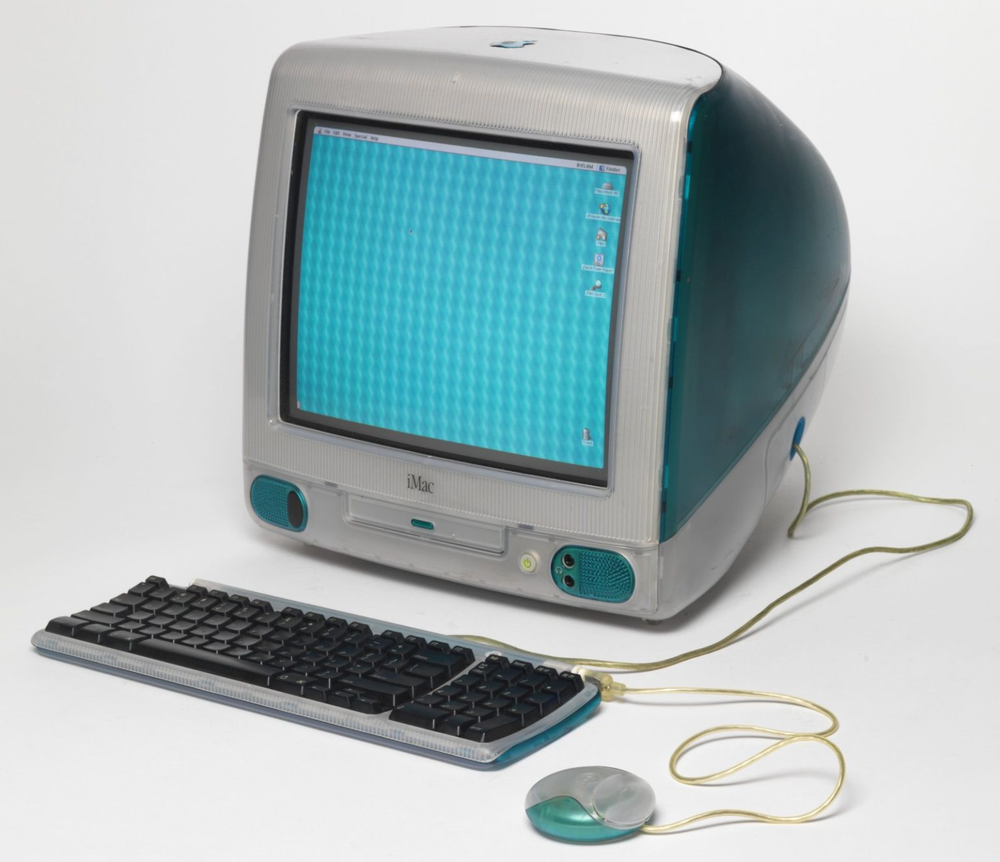
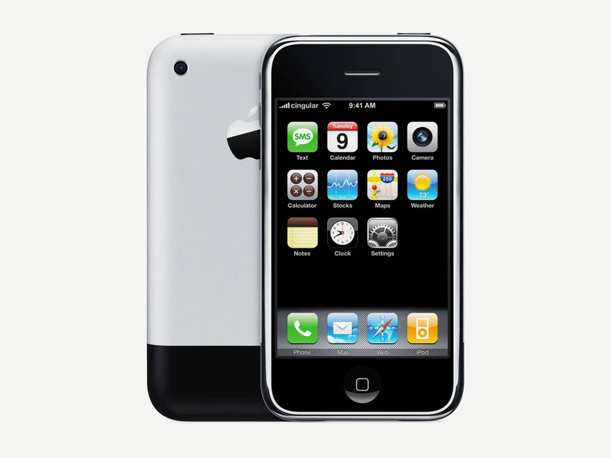
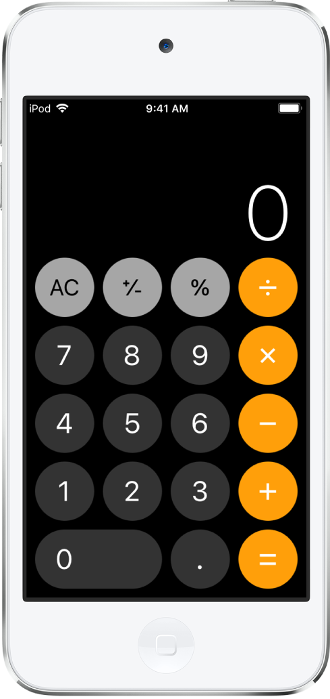

Таймлайн эволюции
Путь функционализма от индустриальных продуктов Braun к цифровым интерфейсам Apple и современным UX-решениям.
Braun SK 4
Аудиосистема с прозрачной крышкой, ставшая символом нового подхода. Прозрачный акрил показал внутреннюю структуру, что было революционным для того времени.
Braun T 3
Карманный радиоприёмник, воплощающий принцип «меньше, но лучше». Круглый динамик в центре, органы управления смещены вниз для эргономики.
Braun hi-fi system
Модульная аудиосистема с единым визуальным языком. Чёрный корпус, белые элементы управления, возможность компоновки модулей.
Braun ET66
Калькулятор с мембранной клавиатурой и строгим цветовым кодированием. Белый для цифр, серый для функций, оранжевый для операций.
iMac G3
Первый продукт Apple под руководством Джонатана Айва. Прозрачный цветной корпус, интегрированное решение всех компонентов.
iPod
Цифровой плеер с колесом прокрутки, вдохновлённый Braun T 3. Белая панель, минимальное количество элементов управления.
iPhone
Революционный смартфон с полностью цифровым интерфейсом. Одна кнопка Home, максимум функциональности через экран.
HomePod
Умная колонка с голосовым управлением и сенсорной поверхностью. Новая форма взаимодействия с аудиосистемой.
Дитер Рамс и Braun
Работа в компании Braun с 1955 по 1998 год. Десять принципов хорошего дизайна, ставшие практическим руководством для поколений.
Braun T 3
Карманный радиоприёмник с предельно лаконичной фронтальной панелью. Круглый динамик в центре, органы управления смещены вниз для естественной биомеханики удержания. Серый корпус с оранжевым акцентом. Отсутствие декора делает интерфейс интуитивно понятным без инструкции.

Braun SK 4
Аудиосистема с прозрачной акриловой крышкой. Прозвище «гроб Белоснежки». Белый металлический корпус, деревянное основание. Революционное решение показать внутреннюю структуру устройства.

Braun ET66
Калькулятор с мембранной клавиатурой 4×5. Строгое цветовое кодирование: белые цифры, серые функции, оранжевые операции. Снижение когнитивной нагрузки через визуальную иерархию.

Hi-fi system
Модульная аудиосистема. Единый визуальный язык всех компонентов. Возможность индивидуальной конфигурации.

10 принципов
Систематизация подхода к проектированию. От инновационности до минимализма. Практическое руководство для дизайнеров.

43 года в Braun
Сотни продуктов, определивших облик послевоенного немецкого дизайна. Влияние на поколения дизайнеров worldwide.
Джонатан Айв и Apple
Главный дизайнер Apple с 1997 по 2019 год. Сознательная адаптация принципов Рамса к цифровым продуктам.

iPod
Цифровой плеер с механическим колесом прокрутки (Click Wheel), визуально и функционально повторяющим колесо настройки Braun T 3. Белая передняя панель, минимальное количество элементов управления, строгая геометрия. Колесо объединило навигацию и регулировку громкости.

iMac G3
Первый продукт Айва в Apple. Интегрированное решение: все компоненты в едином корпусе. Прозрачный цветной пластик показывает внутреннюю структуру — развитие идеи Braun SK 4.

iPhone
Минимум физических элементов (одна кнопка Home), максимум функциональности через цифровой интерфейс. Физическая эргономика стала когнитивной, тактильная обратная связь — визуальной.
Трансформация принципов
Айв не копировал Рамса — он адаптировал принципы к новой среде. Физическая эргономика превратилась в когнитивную. Тактильная обратная связь стала визуальной и анимационной. Статичная форма — динамическим интерфейсом. Но базовые принципы остались: функциональность, честность, минимализм, уважение к пользователю.
Визуальные параллели
Сопоставление индустриальных продуктов Braun и их цифровых аналогов в экосистеме Apple.
Braun T 3 → Apple Podcasts
Braun T 3 (1958)
Круглый динамик в центре, колесо настройки справа. Серый корпус с оранжевым акцентом. Физическое колесо с тактильным откликом.
Apple Podcasts
Обложка подкаста в центре, элементы управления внизу. Минималистичный интерфейс с оранжевыми акцентами. Цифровой прогресс-бар.
Braun ET66 → iOS Calculator
Braun ET66 (1987)
Мембранная клавиатура 4×5. Белые цифры, серые функции, оранжевые операции. Физические кнопки с тактильным откликом.
iOS Calculator

Цифровая клавиатура 4×5. Та же цветовая схема. Виртуальные кнопки с анимацией и тактильной вибрацией Taptic Engine.
Десять принципов Рамса
Сформулированы в конце 1970-х. Трансформация в цифровую эпоху.
01. Инновационность
Braun: Новые материалы (акрил, сталь) и технологии.
Apple: Мультитач, голосовое управление, алгоритмы.
02. Полезность
Braun: Физическая эргономика.
Apple: Когнитивная эргономика и адаптивность.
03. Эстетичность
Braun: Эстетика из рациональности конструкции.
Apple: Эстетика из визуальной иерархии и анимации.
04. Понятность
Braun: Физическая форма и расположение элементов.
Apple: Интуитивная навигация и предсказуемое поведение.
05. Ненавязчивость
Braun: Продукт не доминирует в пространстве.
Apple: Интерфейс не доминирует над контентом.
10. Минимализм
Braun: Концентрация на существенном, отказ от декора.
Apple: Минимализм интерфейса, сокрытие сложности.
Четыре линии трансформации
Устойчивые линии эволюции функциональности от индустриальной эпохи к цифровой.
От материальности к абстракции
Функциональность перестаёт быть свойством объекта и становится свойством взаимодействия. Физическая форма заменяется визуальным образом.
От статики к динамике
Интерфейсы адаптируются к контексту, действиям пользователя, состоянию системы. Функциональность становится процессом, а не состоянием.
От прозрачности к скрытности
Сложность системы скрывается за минималистичным интерфейсом. Форма не отражает функцию, а скрывает её сложность ради простоты взаимодействия.
К алгоритмической персонализации
Пользователь становится не конструктором системы, а её соавтором. Алгоритмы адаптируют систему под предпочтения пользователя.
Интерактивный Braun T 3
Нажмите на кнопку питания, чтобы включить легендарный радиоприёмник 1958 года. Почувствуйте, как принципы функционализма оживают.
Нажмите на круглую кнопку в правом нижнем углу